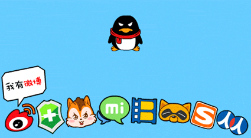
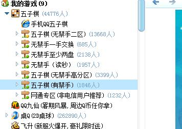

qq游戏大厅推出一手交换规则了
首页
五子棋新闻
#1 qq游戏大厅推出一手交换规则了 作者：白衣神童小剑魔 发表时间：2012-6-18 19:52:19
明显抄袭迅雷的

#2 Re:qq游戏大厅推出一手交换规则了 作者：白河愁 发表时间：2012-6-18 20:33:57
没看见有……
#3 Re:qq游戏大厅推出一手交换规则了 作者：第五象限 发表时间：2012-6-18 20:39:05
据说曾出现过 但貌似技术上存在问题 很快就被拿下了
#4 Re:qq游戏大厅推出一手交换规则了 作者：梧桐风 发表时间：2012-6-18 20:49:59
不会吧，技术水平这么烂……什么时候能时间能自由决定，别的棋类早有这功能，像围棋，功能老强大了～腾讯就是一直在复制
#5 Re:白河愁【==Re:qq游戏大厅推出一手交换规则了==】 作者：炫飞冰弦 发表时间：2012-6-18 20:50:48
引用：
原文由 白河愁 发表于 2012-6-18 20:33:57 :
没看见有……
同感……
#6 Re:qq游戏大厅推出一手交换规则了 作者：aabb 发表时间：2012-6-18 21:01:36
有么。。
#7 Re:qq游戏大厅推出一手交换规则了 作者：白衣神童小剑魔 发表时间：2012-6-18 21:06:59
饭前还有 出去吃了顿饭 没了
［此帖子已被 白衣神童小剑魔 在 2012-6-18 21:09:22 编辑过］
［此帖子已被 白衣神童小剑魔 在 2012-6-18 21:10:08 编辑过］
#8 Re:qq游戏大厅推出一手交换规则了 作者：小红眼镜 发表时间：2012-6-18 21:20:58
哦哦。。原来这个样子。。。刚在贴吧也看到有人发帖说出了。。。俺进去发现木有。还以为俺人品不好。。。。
#9 Re:qq游戏大厅推出一手交换规则了 作者：白衣神童小剑魔 发表时间：2012-6-19 10:33:17
能玩了
#10 Re:qq游戏大厅推出一手交换规则了 作者：伤情路 发表时间：2012-6-19 12:45:47
要下载新的五子棋才能看到的
#11 Re:qq游戏大厅推出一手交换规则了 作者：小红眼镜 发表时间：2012-6-19 13:44:51
据说是原来在迅雷下棋的孩子一起写请愿书之类的。。然后跟腾讯交涉。。最后搞定的。。。咱们是不是可以借鉴一下下啊。。咳咳。
#12 Re:小红眼镜【==Re:qq游戏大厅推出一手交换规则了==】 作者：白衣神童小剑魔 发表时间：2012-6-19 13:58:50
艰巨的任务交给你了
#13 Re:qq游戏大厅推出一手交换规则了 作者：虎哥 发表时间：2012-6-19 15:40:14
刚去试了，一手交换功能可以使用了。。
#14 Re:qq游戏大厅推出一手交换规则了 作者：梧桐风 发表时间：2012-6-19 16:19:26
小红怎么发起啊？任务交给你了，建议腾讯开个分栏复制ORC……
#15 Re:qq游戏大厅推出一手交换规则了 作者：小红眼镜 发表时间：2012-6-19 17:10:53
额。。你觉得一个每年在QQ下棋不超过50盘的孩子。。。能够有多大动力去发起这个。。。俺就是那么一提议而已。因为至少这个事情说明跟腾讯商量是有戏的。。。等有心人去做咯。俺搞搞现实中的推广。。。网络的暂时只能贴吧搞搞。。蹇瓤取Ｇ锴镉蜗氛饪檎蟮匾恢笔歉鞔笊缤呕钤镜摹！Ｋ以，是吧。嗯。
#16 Re:qq游戏大厅推出一手交换规则了 作者：三道 发表时间：2012-6-19 18:53:34
楼上经常给动画片配音么？
#17 Re:小红眼镜【==Re:qq游戏大厅推出一手交换规则了==】 作者：自来水 发表时间：2012-6-19 19:35:39
同样不超过50盘的路过。。。。。。。。。。。。贴吧上的那局该你了
#18 Re:qq游戏大厅推出一手交换规则了 作者：忧郁的双眼 发表时间：2012-6-19 19:42:52
是15路？17路？还是19路？感觉15路太小了！
#19 Re:qq游戏大厅推出一手交换规则了 作者：失落刀 发表时间：2012-6-19 20:21:53
不得不说：个人很佩服推广一手交换规则的那些人的努力。
#20 Re:qq游戏大厅推出一手交换规则了 作者：讲五堂笑天 发表时间：2012-6-20 1:17:00
表面看一样，实际是两种不同的游戏方式、只有连五胜一样
#21 Re:qq游戏大厅推出一手交换规则了 作者：与郎共五 发表时间：2012-6-20 8:02:17
去了.无禁的.居然没遇到有星外开局的
#22 Re:qq游戏大厅推出一手交换规则了 作者：梧桐风 发表时间：2012-6-20 8:04:22
楼上正解……好好的一手交换，差不多碰到都是天元开局
#23 Re:qq游戏大厅推出一手交换规则了 作者：用心学习 发表时间：2012-6-20 9:04:43
嗯嗯 ，很少有人下边角开局的。
#24 Re:qq游戏大厅推出一手交换规则了 作者：三道 发表时间：2012-6-20 9:36:53
一个月后，情况就有改变了。
#25 Re:与郎共五【==Re:qq游戏大厅推出一手交换规则了==】 作者：陶涛业余 发表时间：2012-6-20 16:47:08
我是星外开局啊~~